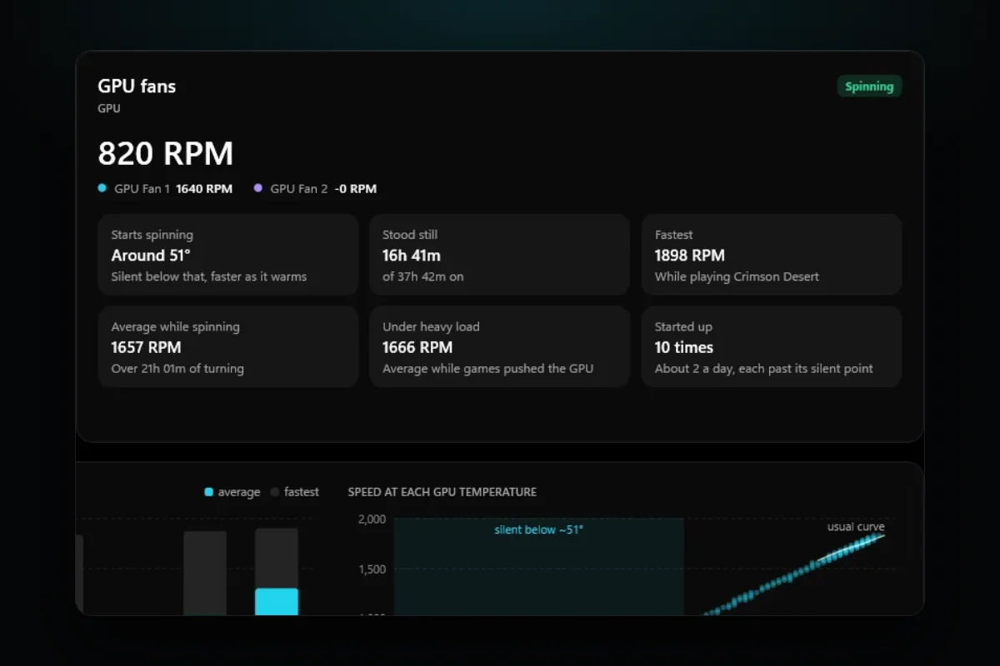

PC problems · Fans
GPU fan not spinning? When it's normal and when it's a fault
My GPU's fans stood still 42% of the time since late September, and never once above 52°C. When a GPU fan not spinning is normal, how RigSight tells it apart from a stuck fan, and what to check when it really is a fault.

The short answer
A GPU fan not spinning at idle is usually normal. Most modern cards stop their fans while cool to stay silent, often until somewhere around 50 to 60°C. It's a fault when the fan stays at 0 rpm while the GPU is hot in a game. Then check the fan software, cables and dust, and stop gaming until it spins.
Since 29 September, RigSight has recorded about 29,700 minutes of my GPU's two fans. They stood still for 42% of that time. They were never still with the GPU above 52°C, and from 52°C up they spun every single minute. A GPU fan not spinning is usually the card doing what it was built to do. What matters is whether the fan stays still when the GPU is hot, and here's how to tell the two apart.
How RigSight caught it
RigSight records every fan's speed each minute next to the temperature of the part it cools. On the Fans page, a GPU fan at 0 rpm with a cool GPU shows as "Resting while cool". The same fan at 0 rpm with the GPU at 70°C or more shows as "Stopped while hot" and counts as needing a look. For a card with fan stop, the page also works out where the fans start, and says it as "Silent below that, faster as it warms". It shows how long they stood still and how many times they started up, for a day, a week, a month or a year.
My fans also stop between about 42 and 50°C some of the time and spin the rest. That's the gap cards keep on purpose. Once spinning, they keep going until the GPU has cooled a few degrees, so they don't flick on and off. RigSight once read a stopped fan as a clogged one, and that story is in The day RigSight told me my healthy fan was clogged. Since then it compares a fan only with itself at the same heat.
Since version 1.7.0 you don't have to be watching. If a GPU fan shows 0 rpm for 3 minutes or more with the GPU at 70°C or more, and it always turns at that heat, you get a notification titled "Your GPU fan stopped". It says how long, from when and how hot the GPU was, and ends with "Check it isn't blocked or unplugged." RigSight also tells you when fans spin slower than usual at the same heat. The bell in the title bar keeps every notification from the last 30 days, so one you missed while gaming is still there. GPU fans show without admin rights. RigSight is free and open source.
Why most GPU fans stop on purpose
Most GPUs made in the last several years have a fan stop mode. NVIDIA card makers call it things like zero RPM, 0dB or fan stop. AMD calls it Zero RPM and says it is on by default. The idea is simple. When you're on the desktop or watching a video, the heatsink alone can keep the GPU cool, so the fans stay off and the card is silent.
The fans start once the GPU warms past a set point. On many cards that's somewhere around 50 to 60°C, but the exact number is set by the card maker, so it differs between models. Once started, cards often keep spinning until the GPU drops a few degrees below that point. That gap stops the fans from flicking on and off every few seconds.
So these are all normal.
- A GPU fan not spinning when idle, with the GPU at 30 to 50°C.
- A GPU fan not spinning on startup, because the card is cold.
- Fans that start and stop a few times while you browse, as the GPU drifts around its start point.
- One fan of three stopping before the others at light load, on cards that do that.
How to tell if it's a fault
The test is heat. A healthy fan with fan stop spins once the GPU is warm. A broken one doesn't. Here's how to check.
- Open a tool that shows both GPU temperature and fan speed. For AMD cards, AMD Software has this under Performance > Metrics. For any card, MSI Afterburner or HWiNFO show both.
- Start a demanding game or a benchmark, windowed so you can watch the numbers.
- Watch the fan speed as the temperature climbs past 60°C.
- If the temperature reaches about 70°C or more and the fan still reads 0 rpm, close the game. That's a GPU fan not spinning under load, and it needs fixing before you play again.
If the fans spin up and the GPU settles at a normal gaming temperature, the card is fine. The post on normal GPU temperature while gaming has the ranges.
A GPU that runs hot with no fan won't usually break at once. It will throttle, which means it slows itself down to stay under its limit. You'll see lower frame rates and the clock speed dropping. If it gets too hot it can shut the PC off. Either way, don't keep gaming on it.
What to check when the GPU fan is not spinning while gaming
Try these in order. The first ones are the most common causes and the safest to fix.
1. A fan curve or tool that holds the fans back
Fan tools like MSI Afterburner, EVGA Precision X1, ASUS GPU Tweak and AMD Software can all set their own fan curve. A curve copied from another card, a profile that loads at startup, or a fixed speed of 0% can keep the fans still at any heat. Two of these tools running at once can also fight over the fans.
- Open the fan tool you use and choose its default or auto fan setting.
- In AMD Software, open Performance > Tuning and reset the tuning to default. The fan tuning there also has the Zero RPM switch.
- Close any second fan tool, then test again in a game.
Turning fan stop off is a fair test. If the fans spin with it off and never with it on, the card's fan stop isn't waking up. A driver can cause that, which is the next step.
2. The graphics driver
Fan control on modern cards goes through the driver. A bad install, or a driver release with a fan bug, can leave the fans still. Restart the PC first, since that clears a stuck state. If it keeps happening, install the latest driver from NVIDIA or AMD, or go back one version if the trouble started right after an update.
3. Something blocking the fan
Shut the PC down and switch the power supply off at its switch. Then look closely for these.
- A cable resting against the blades. Cables tied near the card can drift into them.
- Thick dust or pet hair around the hub, which can stall a weak fan.
- A blade that rubs the shroud, often after a card was dropped or the shroud bent.
Turn each fan gently with a finger. It should spin freely and coast for a moment. If it feels gritty, stiff or stops at once, the bearing is worn. When you clean it with compressed air, hold the blades still so the air doesn't spin them too fast.
4. Power and the fan's own cable
Each fan connects to the card's board through a small cable under the shroud. If the card was opened, repasted or cleaned, one may have come loose. That's the usual reason one GPU fan isn't spinning when the others are. If you're not comfortable opening the shroud, leave it to the maker's support, since opening it can affect the warranty on some cards.
If no fan spins and you get no display, the card likely has no power at all. Check that the PCIe power cables are pushed fully into the card and the power supply, with no gap at the latch, and that the card is seated in its slot.
5. Laptops
Laptop GPUs usually share fans and heat pipes with the CPU, and the laptop's maker sets how they behave. Silent or quiet modes in the maker's app can hold the fans low. Switch to its balanced or performance mode and test again. If the fans never come on and the laptop gets hot, contact the maker.
6. When it's the fan itself
If the fan stays still in a game after all of the above, it has failed. Contact the card maker about a repair or replacement under the warranty. Until it's fixed, don't game on the card.
If your GPU fan isn't spinning right now, start with the heat test above. Five minutes in a game with the temperature and fan speed on screen tells you whether you have a quiet card or a broken fan.
Questions people ask
Is it normal for GPU fans to not spin?
Yes, at idle. Most current NVIDIA and AMD cards have a zero RPM or fan stop mode that keeps the fans still while the GPU is cool, often below somewhere around 50 to 60°C. The exact point depends on the card. The fans start once the card warms past that point.
Why are my GPU fans not spinning on startup?
When the PC first starts, the GPU is cold, so a card with fan stop has no reason to spin. Some cards give the fans a short spin at power on and some don't. As long as they start once you game, nothing is wrong.
Why is one GPU fan not spinning?
Some cards stop one fan before the others at light load, and some run only part of their fans until the card is warm. If one fan stays still while the others spin hard in a game, it may be stuck, unplugged at its small connector on the card, or worn out.
What should I do if my GPU fan is not spinning while gaming?
Watch the GPU temperature. If it climbs past about 70°C and the fan still reads 0 rpm, close the game. Reset any custom fan curve to default, update the graphics driver, and check the fan isn't blocked by a cable or dust. If it still won't spin, contact the card maker about the warranty.
Can a GPU fan not spinning and no display be the same problem?
Often, yes. If the fans don't move and there's no picture, the card may not be getting power. Check that the PCIe power cables are pushed fully into the card and the power supply, and that the card sits firmly in its slot.